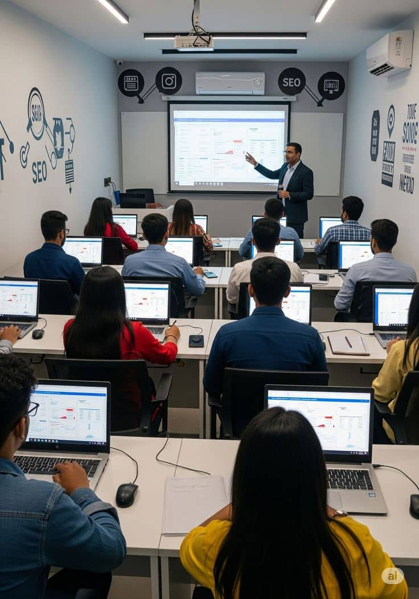

L'infrastructure, la sécurité, et la gestion des systèmes.
Préparez-vous à devenir un chef de projet IT.
Ce cours nous a plongés au cœur de l'infrastructure IT. De la conception physique d'un centre (Fond, Plafond, Plancher) à la gestion des réseaux et des protocoles, en passant par la sécurité et l'administration à distance.
Explorer le cours
Gérer un centre informatique, c'est comprendre comment les systèmes sont construits. Nous avons étudié les aspects fondamentaux de la construction d'un centre : le Fond, Plafond, Plancher, les accès de secours, et la détection d'incendies. Nous avons également plongé dans les Topologies Réseaux, les Protocoles et la Sécurité.
Étude des normes de construction (Fond, Plafond, Plancher). Gestion des accès de secours et systèmes de détection d'incendies.
Analyse des topologies (Bus, Anneau, Étoile, Maillé). Fonctionnement des protocoles TCP/IP, UDP, DNS, DHCP.
Mise en place de Microsoft Remote Desktop (RDP). Installation, configuration et utilisation pour gérer les serveurs à distance.
De la théorie des réseaux à la pratique de l'administration à distance.
Les topologies définissent la manière dont les ordinateurs sont connectés entre eux. Nous avons étudié les 4 principales :
Les protocoles sont les règles qui permettent aux machines de communiquer. Nous avons étudié :
Le travail pratique de fin de cours portait sur l'administration à distance. Voici le résumé de notre projet :
Hôte (L'ordinateur à contrôler) ➡ RDP (Protocole) ➡ Client (L'ordinateur qui contrôle)La sécurité est un aspect crucial de la gestion d'un centre. Nous avons appris à mettre en place des : mots de passe forts, à activer les pare-feux, à limiter les utilisateurs autorisés, et à maintenir les systèmes à jour.